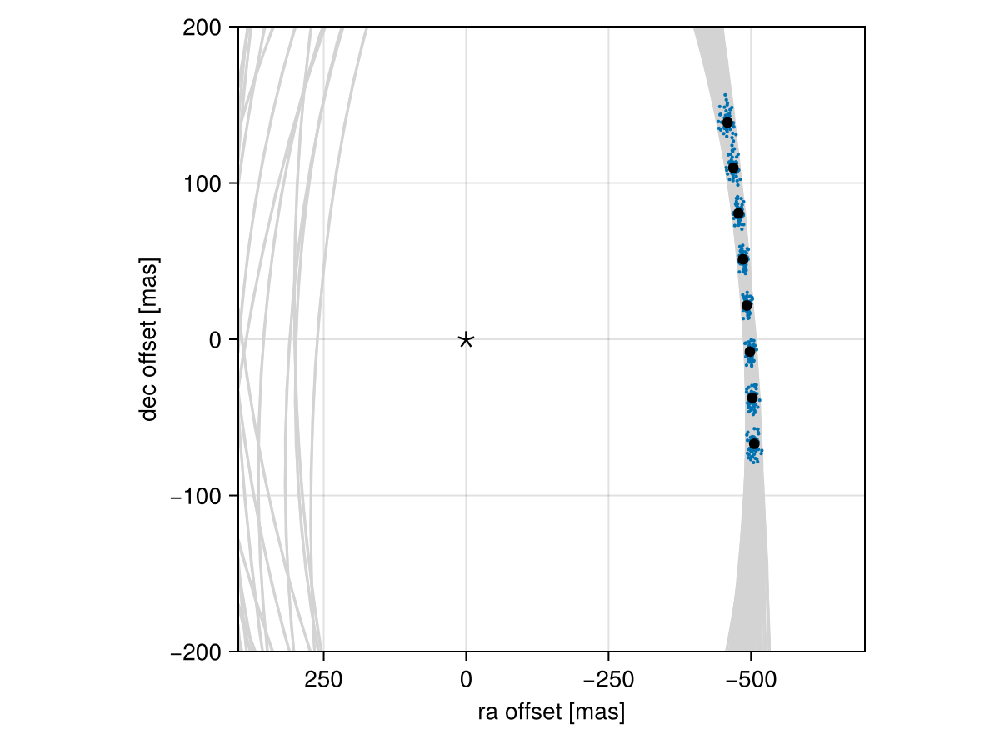

Posterior Predictive Checks
A posterior predictive check compares our true data with simulated data drawn from the posterior. This allows us to evaluate if the model is able to reproduce our observations appropriately. Samples drawn from the posterior predictive distribution should match the locations of the original data.
To demonstrate, we will fit a model to relative astrometry data:
using Octofitter
using Distributions
astrom_like = PlanetRelAstromLikelihood(Table(;
epoch= [50000,50120,50240,50360,50480,50600,50720,50840,],
ra = [-505.764,-502.57,-498.209,-492.678,-485.977,-478.11,-469.08,-458.896,],
dec = [-66.9298,-37.4722,-7.92755,21.6356, 51.1472, 80.5359, 109.729, 138.651,],
σ_ra = fill(10.0, 8),
σ_dec = fill(10.0, 8),
cor = fill(0.0, 8)
))
@planet b Visual{KepOrbit} begin
a ~ truncated(Normal(10, 4), lower=0, upper=100)
e ~ Uniform(0.0, 0.5)
i ~ Sine()
ω ~ UniformCircular()
Ω ~ UniformCircular()
θ ~ UniformCircular()
tp = θ_at_epoch_to_tperi(system,b,50420) # reference epoch for θ. Choose an MJD date near your data.
end astrom_like
@system Tutoria begin
M ~ truncated(Normal(1.2, 0.1), lower=0)
plx ~ truncated(Normal(50.0, 0.02), lower=0)
end b
model = Octofitter.LogDensityModel(Tutoria)
using Random
Random.seed!(0)
chain = octofit(model)Chains MCMC chain (1000×28×1 Array{Float64, 3}):
Iterations = 1:1:1000
Number of chains = 1
Samples per chain = 1000
Wall duration = 4.05 seconds
Compute duration = 4.05 seconds
parameters = M, plx, b_a, b_e, b_i, b_ωy, b_ωx, b_Ωy, b_Ωx, b_θy, b_θx, b_ω, b_Ω, b_θ, b_tp
internals = n_steps, is_accept, acceptance_rate, hamiltonian_energy, hamiltonian_energy_error, max_hamiltonian_energy_error, tree_depth, numerical_error, step_size, nom_step_size, is_adapt, loglike, logpost, tree_depth, numerical_error
Summary Statistics
parameters mean std mcse ess_bulk ess_tail rh ⋯
Symbol Float64 Float64 Float64 Float64 Float64 Float ⋯
M 1.1868 0.0924 0.0034 744.0602 795.9626 0.99 ⋯
plx 49.9997 0.0195 0.0006 959.2947 525.5966 0.99 ⋯
b_a 11.9315 2.5044 0.2210 92.0730 245.1912 1.02 ⋯
b_e 0.1620 0.1105 0.0067 252.5975 341.7935 1.02 ⋯
b_i 0.6385 0.1764 0.0236 68.0560 139.8406 1.03 ⋯
b_ωy 0.1045 0.7439 0.0681 145.3815 598.7533 1.00 ⋯
b_ωx -0.0293 0.6792 0.0434 278.9002 784.0029 1.00 ⋯
b_Ωy 0.1579 0.7368 0.0996 75.2006 367.4715 1.00 ⋯
b_Ωx 0.0865 0.6664 0.0858 68.6806 314.2985 1.00 ⋯
b_θy 0.0743 0.0099 0.0004 770.4779 656.0633 0.99 ⋯
b_θx -1.0018 0.0957 0.0034 784.1473 650.3573 0.99 ⋯
b_ω -0.2277 1.7063 0.1019 287.2212 559.1234 1.00 ⋯
b_Ω -0.2423 1.6425 0.2024 83.5352 310.5335 1.00 ⋯
b_θ -1.4967 0.0073 0.0002 946.4174 694.2048 1.00 ⋯
b_tp 42650.4702 5411.1826 358.7252 244.2135 398.3734 1.00 ⋯
2 columns omitted
Quantiles
parameters 2.5% 25.0% 50.0% 75.0% 97.5%
Symbol Float64 Float64 Float64 Float64 Float64
M 1.0073 1.1252 1.1821 1.2495 1.3710
plx 49.9596 49.9859 50.0006 50.0135 50.0354
b_a 8.0541 10.1212 11.6094 13.4091 17.4190
b_e 0.0057 0.0704 0.1455 0.2410 0.4008
b_i 0.2038 0.5523 0.6619 0.7616 0.9132
b_ωy -1.0708 -0.6716 0.2725 0.8142 1.0763
b_ωx -1.0635 -0.6654 -0.0638 0.6105 1.0240
b_Ωy -1.0310 -0.6058 0.3284 0.8551 1.0969
b_Ωx -1.0472 -0.4859 0.1880 0.6907 1.0694
b_θy 0.0559 0.0673 0.0737 0.0811 0.0944
b_θx -1.1962 -1.0675 -1.0002 -0.9317 -0.8356
b_ω -2.9682 -1.7831 -0.0833 0.9503 3.0013
b_Ω -2.9534 -1.9272 0.2225 0.9106 2.7145
b_θ -1.5101 -1.5019 -1.4968 -1.4917 -1.4815
b_tp 29967.2146 39329.4584 43827.6865 46493.8809 50052.9429
We now have our posterior as approximated by the MCMC chain. Convert these posterior samples into orbit objects:
# Instead of creating orbit objects for all rows in the chain, just pick
# every twentieth row.
ii = 1:20:1000
orbits = Octofitter.construct_elements(chain, :b, ii)50-element Vector{Visual{KepOrbit{Float64}, Float64}}:
Visual{KepOrbit{Float64}, Float64}(KepOrbit(15.3, 0.0978, 0.796, -1.11, 0.157, 30400.0, 1.04), 50.01008367739242, 4.1244682038643383e6)
Visual{KepOrbit{Float64}, Float64}(KepOrbit(11.5, 0.0426, 0.653, -2.99, 0.868, 49000.0, 1.13), 49.99479500170374, 4.125729488299148e6)
Visual{KepOrbit{Float64}, Float64}(KepOrbit(11.9, 0.347, 0.677, 0.863, 5.68, 40000.0, 1.36), 49.99081325519081, 4.12605810085681e6)
Visual{KepOrbit{Float64}, Float64}(KepOrbit(12.4, 0.255, 0.508, 0.264, 5.68, 37400.0, 1.16), 49.98029347918608, 4.126926547278029e6)
Visual{KepOrbit{Float64}, Float64}(KepOrbit(13.4, 0.0105, 0.77, -0.205, 3.56, 46500.0, 1.2), 49.99368702874554, 4.1258209237778573e6)
Visual{KepOrbit{Float64}, Float64}(KepOrbit(12.8, 0.261, 0.424, 0.89, 4.57, 34500.0, 0.97), 50.01796801847351, 4.1238180632171743e6)
Visual{KepOrbit{Float64}, Float64}(KepOrbit(12.2, 0.0801, 0.687, -2.72, 0.869, 49500.0, 1.33), 50.01190400971923, 4.1243180815494405e6)
Visual{KepOrbit{Float64}, Float64}(KepOrbit(9.73, 0.0349, 0.617, 0.0108, 1.33, 45000.0, 1.32), 49.98260390799346, 4.126735781506836e6)
Visual{KepOrbit{Float64}, Float64}(KepOrbit(13.8, 0.153, 0.78, 3.13, 3.39, 36500.0, 1.12), 49.994667324166, 4.1257400246825395e6)
Visual{KepOrbit{Float64}, Float64}(KepOrbit(16.1, 0.0951, 0.939, 0.339, 0.124, 35400.0, 1.27), 50.003192928971686, 4.125036581023824e6)
⋮
Visual{KepOrbit{Float64}, Float64}(KepOrbit(12.9, 0.195, 0.711, 0.181, 0.141, 38500.0, 1.19), 49.96784094073841, 4.1279550230042795e6)
Visual{KepOrbit{Float64}, Float64}(KepOrbit(13.8, 0.055, 0.797, -1.07, 0.496, 34800.0, 1.12), 49.996636346875015, 4.1255775402357117e6)
Visual{KepOrbit{Float64}, Float64}(KepOrbit(11.6, 0.134, 0.659, -2.57, 3.34, 41500.0, 1.2), 50.004986483604036, 4.124888626209939e6)
Visual{KepOrbit{Float64}, Float64}(KepOrbit(15.5, 0.0259, 0.871, -1.29, 0.286, 31300.0, 1.17), 50.057177404665936, 4.120587909552679e6)
Visual{KepOrbit{Float64}, Float64}(KepOrbit(12.1, 0.151, 0.782, -0.813, 3.97, 47300.0, 1.38), 50.01934335132485, 4.123704674634373e6)
Visual{KepOrbit{Float64}, Float64}(KepOrbit(12.5, 0.0912, 0.782, -1.64, 3.38, 43700.0, 1.39), 49.99667899600953, 4.125574020955731e6)
Visual{KepOrbit{Float64}, Float64}(KepOrbit(15.7, 0.00618, 0.914, -3.06, 0.323, 46200.0, 1.3), 50.014007935426974, 4.124144584979242e6)
Visual{KepOrbit{Float64}, Float64}(KepOrbit(17.3, 0.391, 0.81, -2.99, 1.23, 49700.0, 1.1), 50.00971620887077, 4.12449851021975e6)
Visual{KepOrbit{Float64}, Float64}(KepOrbit(12.4, 0.0507, 0.731, -2.52, 3.53, 41200.0, 1.15), 49.988754112418, 4.1262280619384455e6)Calculate and plot the location the planet would be at each observation epoch:
using CairoMakie
epochs = astrom_like.table.epoch' # transpose
x = raoff.(orbits, epochs)[:]
y = decoff.(orbits, epochs)[:]
fig = Figure()
ax = Axis(
fig[1,1], xlabel="ra offset [mas]", ylabel="dec offset [mas]",
xreversed=true,
aspect=1
)
for orbit in orbits
Makie.lines!(ax, orbit, color=:lightgrey)
end
Makie.scatter!(
ax,
x, y,
markersize=3,
)
fig
Makie.scatter!(ax, astrom_like.table.ra, astrom_like.table.dec,color=:black, label="observed")
Makie.scatter!(ax, [0],[0], marker='⋆', color=:black, markersize=20,label="")
Makie.xlims!(400,-700)
Makie.ylims!(-200,200)
fig
Looks like a great match to the data! Notice how the uncertainty around the middle point is lower than the ends. That's because the orbit's posterior location at that epoch is also constrained by the surrounding data points. We can know the location of the planet in hindsight better than we could measure it!
You can follow this same procedure for any kind of data modelled with Octofitter.